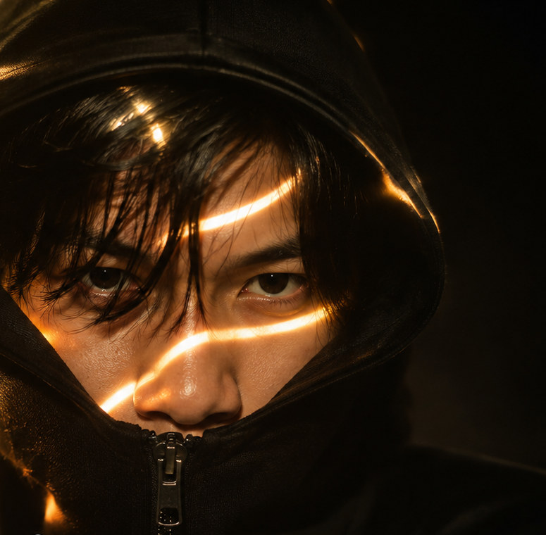

Videography
Visual storytelling, cinematography, video editing, dan produksi konten video.

Saya Santanu Wiryo Aji. Mengubah ide menjadi cerita visual melalui kamera, editing, dan desain.
Explore my works ↗Halo, saya Santanu Wiryo Aji, seorang Multimedia Creative yang berfokus pada Videography, Photography, dan Graphic Design.
Saya memiliki ketertarikan dalam menciptakan karya visual yang menggabungkan kreativitas, estetika, dan storytelling.
Melalui videografi, saya mengeksplorasi bagaimana gambar bergerak dapat membangun emosi dan menyampaikan cerita. Dalam fotografi, saya berfokus pada komposisi, pencahayaan, serta momen yang memiliki karakter.
Sementara melalui desain grafis, saya mengembangkan komunikasi visual yang menarik, fungsional, dan memiliki identitas yang kuat.
Bagi saya, setiap karya adalah kesempatan untuk menghadirkan perspektif baru melalui bahasa visual.
Tiga bidang kreatif yang menjadi fokus pengembangan karya visual saya.
Visual storytelling, cinematography, video editing, dan produksi konten video.
Komposisi visual, pencahayaan, fotografi kreatif, dan pengolahan foto.
Desain komunikasi visual, tipografi, komposisi grafis, dan pengembangan identitas visual.
Dokumentasi proyek, karya klien, dan eksperimen visual pribadi dalam videografi, fotografi, serta desain grafis.

Karya video editing yang mendokumentasikan kegiatan Susur Sungai Bango di Malang, dengan fokus pada kondisi sungai, persoalan lingkungan, dan upaya pelestarian sumber air.
Tonton Video ↗ Informasi Kegiatan
Dokumentasi visual suasana khitanan dan ruwat yang menonjolkan busana tradisional, momen personal, dan detail acara melalui pendekatan cinematic visual storytelling.
Tonton Video ↗
Proyek sinematik untuk klien dengan pendekatan emotional visual storytelling. Memadukan pencahayaan merah dramatis, komposisi artistik, dan atmosfer visual yang intens.
Tonton Video ↗
Eksperimen kreatif pribadi yang menggabungkan atmosfer biru intens, komposisi minimalis, dan tipografi ekspresif untuk mengeksplorasi konsep serta gaya editing.
Tonton Video ↗Koleksi fotografi dan eksplorasi komposisi visual pilihan akan ditambahkan di sini.
Galeri sedang disiapkanKarya desain grafis, eksplorasi tipografi, dan komunikasi visual akan ditampilkan di sini.
Galeri sedang disiapkanPengalaman kerja tim dalam produksi visual musik dan proses pascaproduksi.
Saya berkontribusi sebagai bagian dari tim produksi audiovisual Muzike Indonesia. Peran utama saya adalah kameramen atau camera operator dalam proses pengambilan gambar. Pada sejumlah proyek, saya juga berkolaborasi dalam proses video editing dan post-production.
Kontribusi dan kredit pekerjaan dapat berbeda untuk setiap produksi.
Kunjungi YouTube Muzike Indonesia ↗Tertarik berkolaborasi atau ingin mengenal karya saya lebih jauh? Informasi kontak profesional akan segera tersedia di sini.